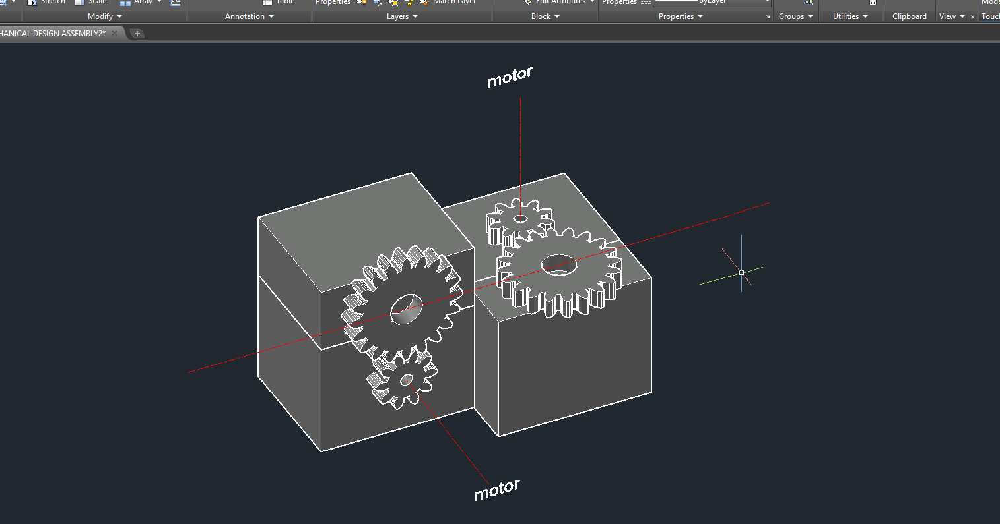
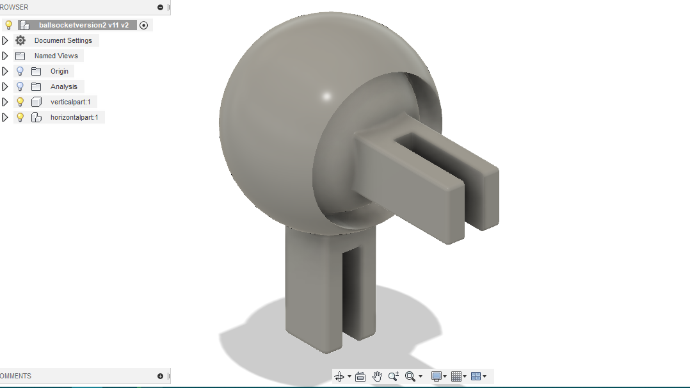
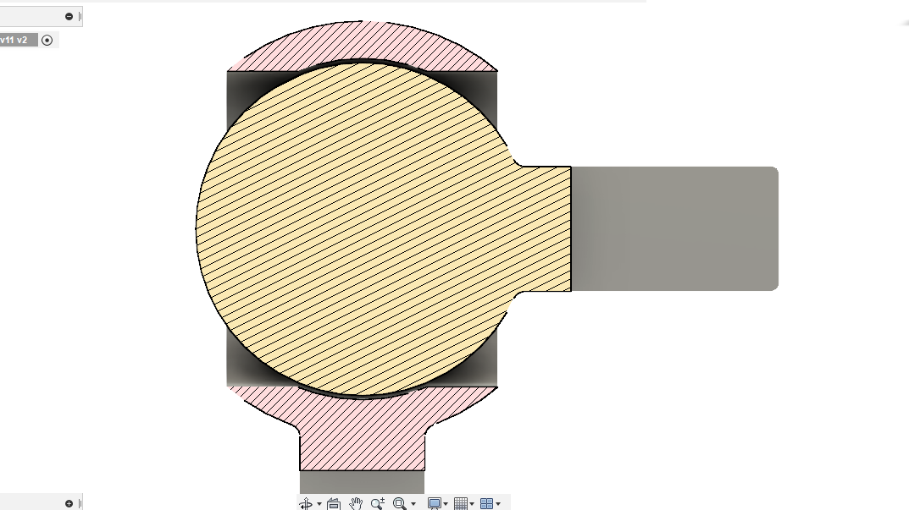
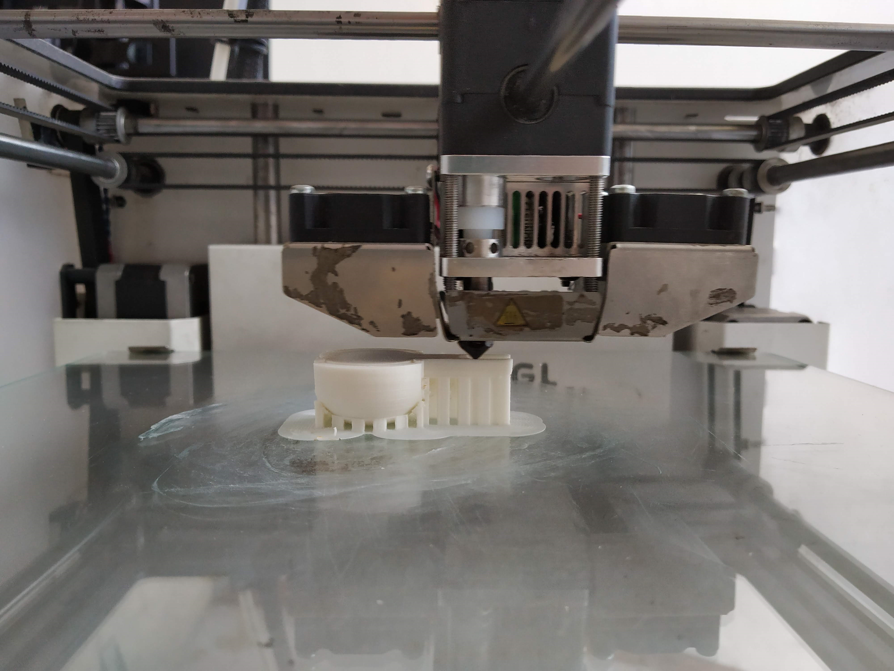
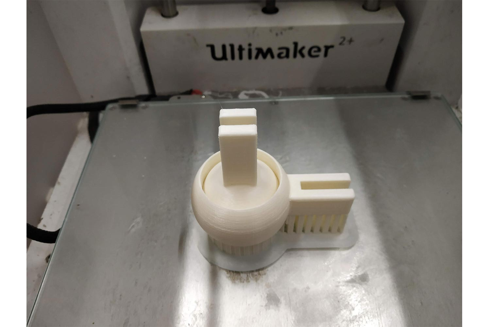
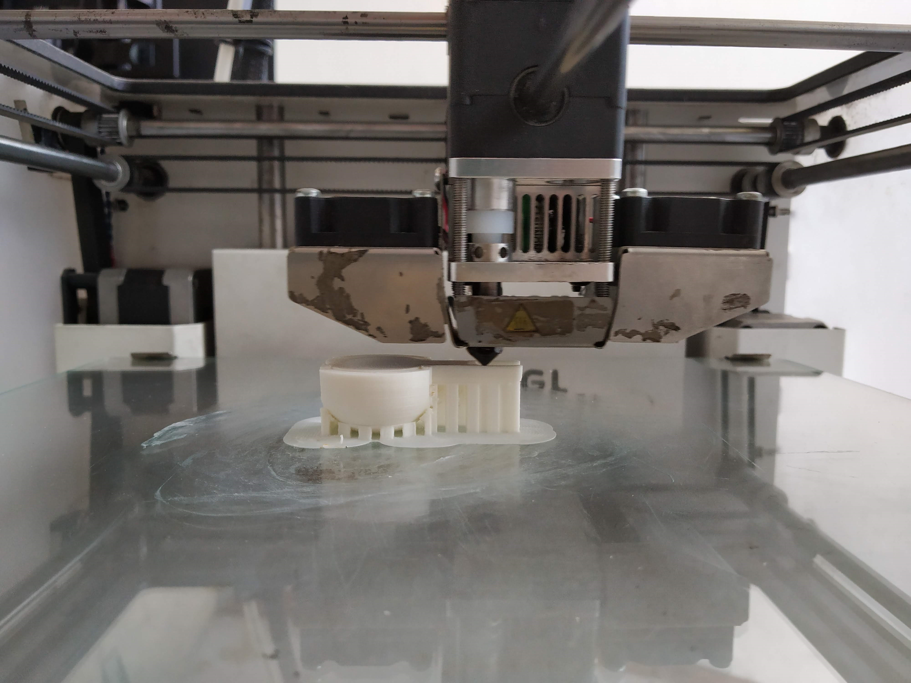
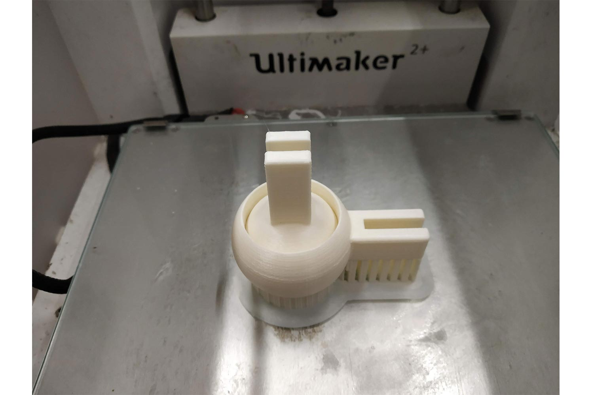

Original files For Prototype
Original files For Mechanism
Week 15 : Assignment
For mechanical design Week we want to make mechanism for the Marble maze puzzle.
Purpose
As i Mentioned above we wanted to have make something fun game in machine design we are going to make Fun marble maze and wanted to control the maze Rotation with servos below for now we started working on mechanical part. Visit Group websitefor more detail.Inspiration
Our inspiration for the project was the The [amazing] Maze made by Katie Levine and our regional instructor Ohad Meyuhas.
Input
Our main objective is to control Marble maze with Hand movement . So our input is Hand gesture which will control the Maze. we are using accelerometer sensor for giving inputs. accelerometer will give relative value of x and y position and according to value Servos will rotate for specific degree.output
Our Mechanical output is Rotation of servo limited to specific degree. we are planning to rotate the servo 20 degree. It will rotate the maze around 40 degree. bR />My Role
In Mechanical Design Me and Dhruv thakker took responsibility for making the mechanism of Marble Maze. Since Many marble maze has already been made , we wanted to try different mechanism for our maze.
As a team we did all work Together and help each other when needed, but My special task was to make sure mechanism shall able to handle the Load of maze after Finalizing the design phase with Dhruv thakker i took responsibility for making upper part of mechanism and he will see the Base part.
Design phase
in initial designing process we started with reverse engineering Katie levine. instead of using four servo We though we may able to use Two Servos with long arms which will rotate the Maze as we want !We came to conclusion that we will place these servo in center of the maze. But challenge was how can we place the servo which will be able to move maze and X and Y axis which center point will lie only on One Z axis. If we don’t design base correctly it will tilt on side by the time and create moment on servo which will Tear off the servo and mechanism will fail.
initial Base design
In initial design Dhruv came off with below idea. Idea was good and our Objective of same Z axis was fulfilling. But there was little concern about load it was not advisable to put Load directly on the servo Shaft. We are going to use MG995 servos - tower pro for our mechanism. This base idea is for getting initial idea, later he designed stronger servo mounting base.
Reasons why not :
solution
so We found these problem very necessary to be solved, one way it could be solve it to make one Gear Drive Designed for the taking the load and Applying the Torque given by Servo to Maze.I started making Gear drive according to requirement. i estimated total load around 3800 kg
Gear Specifications :
Module : 2 : Lower module for High torque Conversion
Pressure angle : 25 Degree Higher pressure angle for better torque handle capacity
Gear(Reduction) ratio : 2:1 : for Double the Torque
I designed gears on fusion 360 with the help of FM gear script. check week 8 for more details.

Possible Gear SERVO Assembly
mechanism
In mechanism i started working on the cad model, as we finalized the base i designed the base according to that , my scale was 0.5. our objective for making cad is to test the mechanism joints and to know which type of joint assembly will fulfill our purpose.
We used two type of Joints
Ball Socket Joints on top
Pivot joints bottom
Ball socket Joint
I started designing the ball sockets then , we wanted 40 degree of inclination in Maze. For that i started designing joints which will have 40 degree of movement. below is first design i tried !
in Fusion 360
Visit week 3 for modeling in fusion 360.
Clearance
I gave clearance Of 1 mm
Cura softwere
visit week 6 for know parameters in Cura.
Layer height : 2 :
wall line count : 5
Infill density : 15 %
Print speed : 80 mm/s
 



parametric file of Arms
Parameters i have given , check week 4 and week 8 for more parametric work !
Arm length : ball socket vertical arm length
Ball socket outer diameter
Distance : Distance between centers of two gears which will be subtracted in vertical arm
Length-Horizontal : Horizontal length of Arm
Length-vertical : vertical length of Arm
Width : Width of Arms
thickness : Thickness of the material
Self Locking mechanism
I wanted to try Self locking mechanism on mechanism , it will eliminate the use of mechanical fasteners there. i have to did some iterations to get perfect dimensions so it can give require compressive force on joints.
For clamping or Fitting the Arms in ball socket i was thinking to make One self-Fitting mechanism , so i 3d print some rectangle slots which inner dimensions are lesser then outer of socket arms when it spreads , it will create compressive force and assembly will stick in.


Coupler
We also made one 3d printed Coupler which will hold the Pinion gears to servo with the help of friction . we just wanted to make it for demonstration purpose so we can know Everything will be good in bigger scale , for bigger scale we intended to use Coupler comes with servo and mount it with center screw which will sufficient to transfer large amount of torque.
Dimensions Of Box is perfect and Gear profile is great.

Assembley of prototype
In assembly we just started joining our Top and Bottom assembly. Dhruv made great base for Servo and gear assembly we just fix them and check as it can work or not.
In prototype mechanism is working perfectly Fine now only thing we have to deal with is load capacity of the mechanism.
Final version
For final mechanism Dhruv started designing bigger base and did some improvement we found in smaller scale , i also start working to make bigger ball sockets and arms. for final design our maze will be approx. 20 inch wide so i decided to make it 16 inch wide : 400 mm
AutoCAD
check out Week 4 to know laser cut inn details.
Ball sockets
For bigger model i had to designs ball sockets which can be capable to handle large shear. I increased Arm length with thickness, if i kept sphere dimensions same i will not able to get degree of freedom i wanted in design , so i had to increase sphere size , it will increase printing time , but it was only way to maintain strength.
First version
Second Version
i made second version in which i increase fillet on slot so it can be more safe in Action
Self locking mechanism


Gears
We Doubled Gear and Pinion size , that was only modification in gear
All the components

Final Assembly of mechanical parts
Dhruv thakker worked on base and the we combine our works. below is some of pictures of it.


Final Assembly of Whole Machine

Final video
Slide

Group work
Visit Group website for more information. Click here.